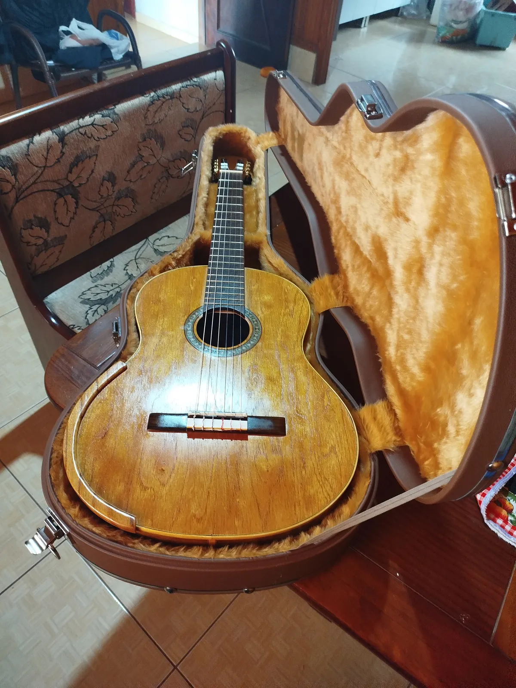

Geovanni Violão Clássico

- Madeiras / materiais
- Fundo e Lateriais: Guajuvira - Tampo: Cedro - Escala: Pau Ferro
- Identificação
- BL-25-VC-002
Violão Clássico Primeiras Notas em madeira maciça, construído com esmero e atenção aos detalhes, resultando em um instrumento refinado.
- TAMPO: Cedro – leveza e excelente resposta sonora
- FUNDO e LATERAIS: Guajuvira – tonalidade quente e visual que se destaca
- BRAÇO: Cedro – conforto e estabilidade na execução
- ACABAMENTOS: Filetes e entalhes em madeira marchetada, que enriquecem a estética do instrumento
- Luthier: Jacir Paulo Baratieri – dedicação e tradição na arte da luteria